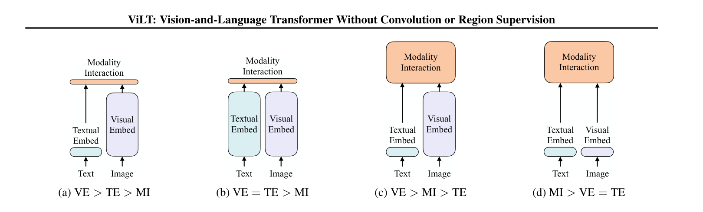
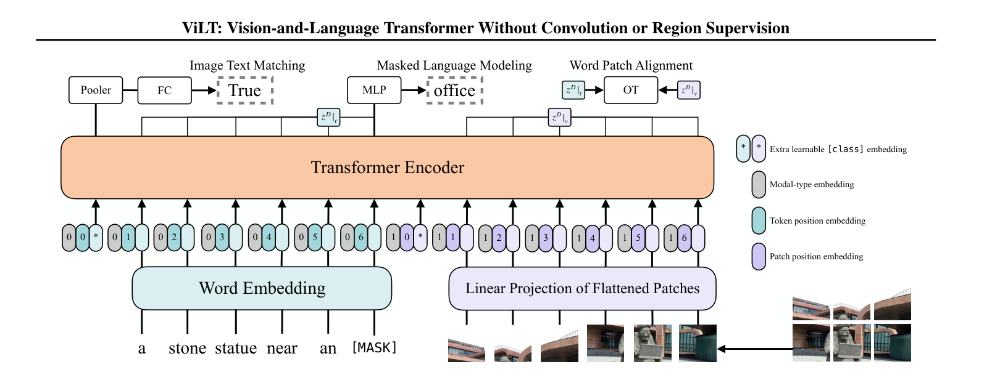
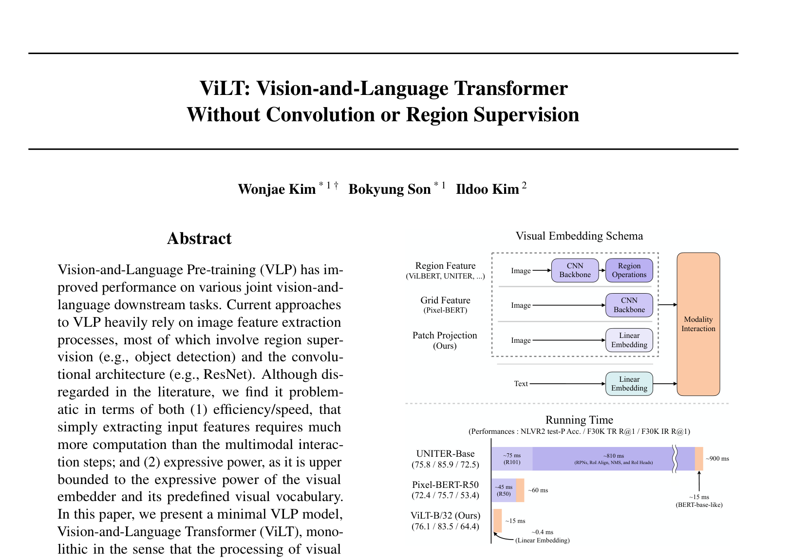

ViLT: Vision-and-Language Transformer Without Convolution or Region Supervision¶
📄 论文链接：arXiv:2102.03334 | PDF
目录¶
核心要点¶
- ViLT 提出了一个极简化的视觉-语言多模态学习框架，将图像特征抽取简化为一层 patch embedding（与 ViT 相同），彻底移除了目标检测（region feature）和 CNN backbone，使视觉端处理时间从 885ms 降至 0.4ms，实现上千倍的推理加速。
- 核心贡献是证明了无需复杂的视觉特征抽取，仅靠简单的 patch embedding + Transformer 融合即可达到有竞争力的性能，在速度和精度之间取得了优秀的 trade-off，成为多模态领域的里程碑式工作。
- 训练技巧至关重要：引入 whole word masking（整个词 mask）加强跨模态依赖；使用 RandAugment 数据增强（去除 color jitter 和 cutout 以保持图文语义一致性），带来了显著的性能提升。
- 对已有 VLP 方法进行了系统性分类（按视觉/文本表达力度平衡性和模态融合方式分为四类），为理解多模态领域提供了清晰的框架，图二被广泛引用。
- 论文定位为 proof of concept，虽性能未超越 state-of-the-art，但开辟了轻量化多模态研究新方向，后续 ALBEF、BLIP 等工作均在此基础上发展。

Figure 2: 四类视觉-语言模型对比
Figure 3: ViLT 模型架构1. 背景与动机¶

Figure 1: 传统 VLP 架构对比1.1 多模态学习的预训练-微调范式¶
多模态领域采用了与 NLP 和 CV 相同的"先预训练再微调"范式。在大规模图像-文本对上进行预训练，提供良好初始化甚至支持 zero-shot 推理。2019-2021 年间涌现了大量 VLP（Vision-Language Pre-training）工作，如 ViLBERT、Visual BERT、VL-BERT、UNITER、OSCAR 等，竞争已非常激烈。
1.2 预训练目标函数¶
几乎所有 VLP 模型都使用两个核心目标函数： - Image-Text Matching (ITM)：判断图像-文本对是否匹配 - Masked Language Modeling (MLM)：BERT 式的完形填空任务
1.3 图像特征抽取的痛点¶
在多模态学习中，文本端处理已经标准化（tokenizer + linear embedding），但图像端存在严重问题：
问题一：效率极低 - 使用目标检测抽特征的方法，整体推理时间约 900ms，其中视觉部分占 885ms，文本仅 15ms - 视觉特征抽取花费的时间远超模态融合时间，本末倒置 - 虽然训练时可以离线预抽取特征存硬盘，但真实部署时面对实时数据无法提前抽取，推理延迟不可接受
问题二：表达能力受限 - 预训练好的目标检测器数据集规模有限（Visual Genome 仅 1600 物体类别 + 400 属性类别） - 非端到端学习，特征不是针对多模态任务优化的，大概率不是最优解 - 文本端词汇无限制，图像端类别过少导致图文难以对齐
1.4 目标检测为什么比其他视觉任务复杂¶
分类任务的"头"很简单——ViT 提取特征后接一个 MLP 就能输出类别概率。但目标检测的"头"本身就是一个复杂的子系统。
分类头 vs 检测头：
分类：ViT → [CLS] token → MLP → 1000 个类别概率
检测：ViT → patch features → FPN + 锚框/匹配 + 回归 + NMS → N 个 (box坐标, 类别, 置信度)
检测头需要解决四个分类任务完全不需要面对的问题：
-
数量不固定：分类永远输出 1 个答案，检测要输出 N 个（可能 0 个，可能 50 个）。模型怎么决定"该输出几个"？这本身就是一个难题。
-
多尺度：同一张图里可能有一个占满画面的大卡车，和远处几个像素大的行人。分类不需要关心这个，但检测必须在不同尺度上都能找到目标，因此需要特征金字塔（FPN）等多尺度特征处理。
-
回归 + 分类同时做：分类只输出离散类别，检测还要输出连续的坐标 \((x_1, y_1, x_2, y_2)\)，是一个回归问题。两个不同性质的任务耦合在一起优化，难度比单独做任何一个都大。
-
匹配问题：训练时，模型预测了 100 个框，ground truth 有 5 个目标——哪个预测对应哪个真实目标？需要用 IoU（交并比）做二分匹配（Hungarian Matching），这在分类里完全不存在。
1.5 目标检测在多模态中的角色：特征提取器而非预训练任务¶
关键澄清：目标检测在早期多模态模型中不是作为"预训练任务"使用的，而是作为特征提取器使用的。
早期多模态模型（ViLBERT、UNITER、OSCAR 等）的完整流程是：
第一步：在 COCO/Visual Genome 上独立训练 Faster R-CNN（纯 CV 任务，与多模态无关）
第二步：冻结检测器，从每张图中提取 36 个 bounding box 的视觉特征
第三步：把这 36 个特征当作"视觉 token"，送入多模态 Transformer 做预训练
预训练任务本身始终是 MLM + ITM，和 ViLT 一样。检测器只是在前面抽特征，相当于把图像"翻译"成 36 个物体特征向量。
早期方法：图像 → 预训练 Faster R-CNN → 36 个 box 特征 → 送入多模态 Transformer（MLM + ITM 预训练）
ViLT： 图像 → patch embedding → 196 个 patch 特征 → 送入多模态 Transformer（MLM + ITM 预训练）
两者的预训练任务相同，只是视觉特征提取方式不同。ViLT 证明了用极简的 patch embedding 替代复杂的检测器，效果差不多，速度快了上千倍。
1.6 为什么选择检测器做特征提取器¶
既然检测器这么复杂，为什么早期模型还要用它抽特征？
- 天然离散化：bounding box 对应物体，具有明确语义，与文本端的 word token 天然对应
- 下游任务需求：VQA、Visual Grounding、Image-Text Retrieval 等任务都与物体强相关，检测到物体往往就能完成任务
- 当时 ViT + 简单检测头效果不如现成的 Faster R-CNN：所以大家选择了"借用"一个已经训练好的强检测器
但这个借用带来了 1.3 节提到的所有问题：特征不对齐、无法端到端训练、pipeline 复杂。
1.7 ViT + patch embedding 如何绕开检测器¶
图像 → 切成 16×16 patches → 线性投影 → 直接送入 Transformer
不需要检测框、不需要多尺度特征金字塔、不需要匹配算法，端到端可训练。ViLT 第一个证明这样效果和用检测器差不多，后续 CLIP 证明这样 scale 上去效果远好于用检测器，从此目标检测器从多模态 pipeline 中彻底消失。
1.8 已有的轻量化尝试¶
- Pixel-BERT：去掉目标检测，直接用 ResNet 最后的特征图（grid feature）作为序列输入 Transformer，计算量降至约 45ms，但性能大幅下降（retrieval 任务下降 10+ 个点）
- 作者认为 grid feature 仍然太贵且效果不好
2. 方法¶
2.1 VLP 方法的系统分类（图二）¶
作者根据两个维度对所有 VLP 方法进行分类：
维度一：模态表达力度平衡性（Visual Embedding vs Text Embedding 的计算量/参数量对比）
维度二：模态融合方式（Modality Interaction 的复杂度）
据此分为四类：
| 类型 | 代表工作 | Visual Embedding | Text Embedding | Modality Interaction | 特点 |
|---|---|---|---|---|---|
| A | VSE 系列 | 重（CNN） | 轻 | 轻（点积/浅层网络） | VE >> TE > MI |
| B | CLIP | 中等 | 中等 | 轻（点积） | VE ≈ TE, MI 轻；适合 retrieval，不适合 VQA/reasoning |
| C | ViLBERT, UNITER, OSCAR | 重（目标检测） | 轻 | 重（Transformer） | VE >> TE, MI 重；性能好但慢 |
| D (ViLT) | ViLT | 轻（patch embedding） | 轻 | 重（Transformer） | VE ≈ TE, MI >> VE/TE |
ViLT 的核心洞察：模态融合才是关键，前端特征抽取可以极简化。受 ViT 启发，用 patch embedding 替代所有复杂视觉编码器，使 VE ≈ TE 且都很轻量，计算资源集中在 Transformer 融合上。
2.2 模态融合方式¶
Single-stream：将图像和文本序列直接 concatenate，送入单个 Transformer。简单高效，Transformer 自行学习跨模态交互。
Dual-stream：两个独立模型分别处理各模态，在某一层进行融合。参数更多，某些任务略优，但整体更贵。
ViLT 选择 single-stream 方案。
2.3 ViLT 模型结构¶
ViLT 的模型极其简单，核心就是一个 Transformer encoder：
输入构建： - 文本端：句子经 BERT tokenizer → word embedding（序列长度 L，维度 H=768） - 图像端：图像打成 patch → 经 linear patch embedding → patch token（序列长度 N，维度 H=768） - 两端处理方式完全对称，都是 linear embedding
Embedding 组合（三者相加，非拼接）： - Token embedding（文本 word embedding / 图像 patch embedding） - Position embedding（文本位置 / 图像 patch 位置） - Modality type embedding（文本=0，图像=1，用于区分模态）
特殊 token：
- [CLS] token：文本端和图像端各有一个 class token
- 最终输入序列长度 = 1 + L + 1 + N = L + N + 2
Transformer Encoder： - 标准 Transformer encoder，输出序列长度与输入相同 - 通过 self-attention 自动学习跨模态交互
2.4 训练目标函数¶
2.4.1 Image-Text Matching (ITM) Loss¶
- 人为设计的二分类任务：给定图文对，随机替换图像为数据集中其他图像，让模型判断是否匹配
- 使用输出序列第一个位置（[CLS] token）的特征，经 FC 层做二分类
- 大部分 VLP 模型的标准 loss
2.4.2 Word-Patch Alignment (WPA) Loss¶
- 利用 Optimal Transport（最优运输理论） 计算文本输出和图像输出两个概率分布之间的距离
- 对于匹配的图文对，希望距离越小越好
- 提供了一种细粒度的跨模态对齐信号
2.4.3 Masked Language Modeling (MLM) Loss¶
- NLP 标准的完形填空任务：随机 mask 输入单词，重建被 mask 的词
- 几乎所有涉及 NLP 的多模态模型都会使用
注：当时未加入图像端的重建 loss（masked patch prediction），因为 Beit/MAE 尚未出现，图像重建尚不 work。后续 VL-BEiT 等工作已将视觉重建 loss 引入多模态学习。
2.5 关键训练技巧¶
2.5.1 Whole Word Masking¶
- 问题：BERT tokenizer 会将单词拆分为 subword token（如 "giraffe" → "gi", "ra", "ffe"）。如果只 mask 中间部分（如 "ra"），模型可通过前后缀轻松猜出答案，无需借助图像信息，导致 MLM loss 失效（学了 shortcut）
- 解决：将整个单词的所有 subword token 全部 mask 掉。这样重建时必须依赖图像信息（例如把"长颈鹿"整词去掉，只有看到图像中的长颈鹿才能重建），强制加强跨模态联系
- 这一技巧来自 NLP，但在多模态场景下意义更大
2.5.2 图像数据增强（RandAugment）¶
- 背景：之前基于目标检测的 VLP 方法无法使用数据增强（特征离线预抽取，增强后需重新抽取，代价太高）。直到 ViLT 实现端到端训练，才首次引入强数据增强
- 方案：使用 RandAugment，但做了关键修改——去除 Color Jitter 和 Cutout
- Color Jitter 会改变颜色，导致图文语义不匹配（如"白色兔子"变灰色）
- Cutout 可能裁掉关键物体，同样破坏图文对应关系
- 保留其他 augmentation policy，最大程度保持图文语义一致性
- 效果：消融实验显示数据增强带来的提升最大，超过 whole word masking
3. 实验¶
3.1 预训练数据集（4M 设置）¶
ViLT 预训练使用 4 个数据集，合计约 400 万张图片，被称为 "4M setting"，被后续工作广泛沿用：
| 数据集 | 图片数 | 标题数 | 特点 |
|---|---|---|---|
| MS-COCO | ~10万 | ~50万（1图5标题） | 标题较长（平均 >10 词），完整可下载 |
| Visual Genome | ~10万 | ~500万（1图多标题） | 标题短（5-6 词），完整可下载 |
| Conceptual Captions (CC) | ~300万 | ~300万（1图1标题） | 标题较长，仅提供 URL，部分已失效 |
| SBU Captions | ~100万 | ~100万（1图1标题） | 标题较长，仅提供 URL，部分已失效 |
注意：衡量数据集大小通常以图片数为准，而非 image-text pair 数。CC 和 SBU 因 URL 失效已无法完整下载。
3.2 下游任务性能¶
VQA & NLVR2（分类任务）¶
- 运行时间：ViLT 仅 15ms，vs 区域特征方法 ~900ms，grid feature ~100ms
- VQA 性能：与较新的 VLP 模型（如 Visual BERT）基本持平
- NLVR2 性能：优于部分方法，但远不及 OSCAR、UNITER 等最强方法
- 总结：速度-精度 trade-off 优秀
Image-Text Retrieval（Flickr30K & MS-COCO）¶
- Zero-shot 和 fine-tuning 两种设置
- 性能低于使用区域特征的最佳方法（如 70+ vs 85+）
- 但仍保持了较好的速度优势
- Grid feature 在某些 retrieval 指标上甚至优于 ViLT
3.3 消融实验¶
训练步数的影响¶
- 测试了 25k / 50k / 100k steps
- 性能随训练步数增加而提升，但增幅不大
- 消融实验在 25k steps 上进行（节省资源），最终结果用 100k+ 训练
各组件的贡献（在 25k baseline 上逐步添加）¶
| 组件 | 效果 |
|---|---|
| Baseline (25k) | 基础性能 |
| + Whole Word Masking | 小幅提升 |
| + Masked Patch Prediction (MPP) | 效果不佳，当时图像重建尚不 work |
| + RandAugment 数据增强 | 显著提升，是所有技巧中贡献最大的 |
| 最佳组合训至 200k | 最终报告结果 |
关键发现：数据增强 > Whole Word Masking > 图像重建（当时无效）
3.4 运行时间对比总结¶
| 方法 | 视觉端耗时 | 总耗时 | 备注 |
|---|---|---|---|
| Region Feature (Faster R-CNN) | 885ms | ~900ms | backbone 75ms + RPN/ROI/NMS 800ms |
| Grid Feature (ResNet) | ~45ms | ~60ms | Pixel-BERT 方式 |
| ViLT (Patch Embedding) | 0.4ms | ~15ms | 上千倍加速 |
4. 总结¶
4.1 核心贡献回顾¶
- 最简 VLP 模型：除 Transformer 外无任何额外视觉/文本编码器，带来显著的速度和参数量优势
- 性能不掉：在不使用区域特征或 CNN 特征的情况下，首次达到与之前方法可比的效果
- 首次引入强数据增强：Whole word masking + RandAugment（改良版），此前多模态领域从未使用
4.2 论文定位与写作策略¶
- 定位为 proof of concept：证明无需 convolution supervision 和 region supervision 也能做好 VLP
- 类似 "embarrassingly simple baseline" 的叙事：简单方法就能接近复杂方法的效果
- 将运行时间的上千倍减少作为最大卖点，全文围绕此展开，最大化优势体现
- 虽训练成本高（64×32G V100 训练 3 天），但推理极快
4.3 未来方向（均已验证）¶
作者在结论中提出的三个扩展方向都在后续一年内被证实有效：
- Scalability：更多数据（ALBEF 用 14M 设置）、更大模型（ViLT-Large）→ 性能持续提升
- 图像重建 Loss：Beit、MAE 出来后，VL-BEiT 等已将 masked image modeling 引入多模态，效果显著
- 数据增强：MixUp 拓展到多模态（MixGen 等工作），进一步提升 data efficiency
4.4 实际跟进情况¶
- ViLT 代码基于 PyTorch Lightning，上手有门槛
- 训练资源要求高（64 GPU），限制了直接复现
- NeurIPS 2021 的 ALBEF 解决了训练成本问题（单机单卡即可），成为更实用的 baseline
- ALBEF 作者后续推出 BLIP、BLIP-2 等系列工作，持续发展
4.5 启示¶
- 对现有方法做系统分类有助于发现痛点和创新机会
- 写综述的意义远大于发表本身：加深领域理解、锻炼逻辑组织能力
- 读论文的 Future Work / Limitations 部分是找课题的好方法
- 简单但有效的 baseline 比刷到 SOTA 更有影响力（留出改进空间，吸引社区跟进）